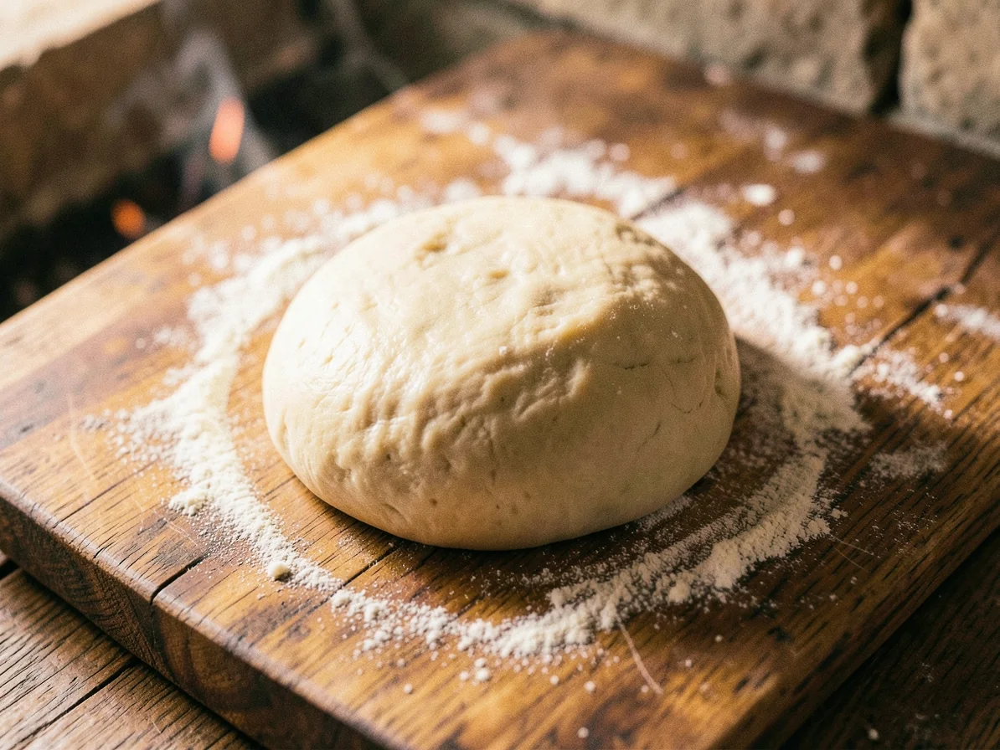
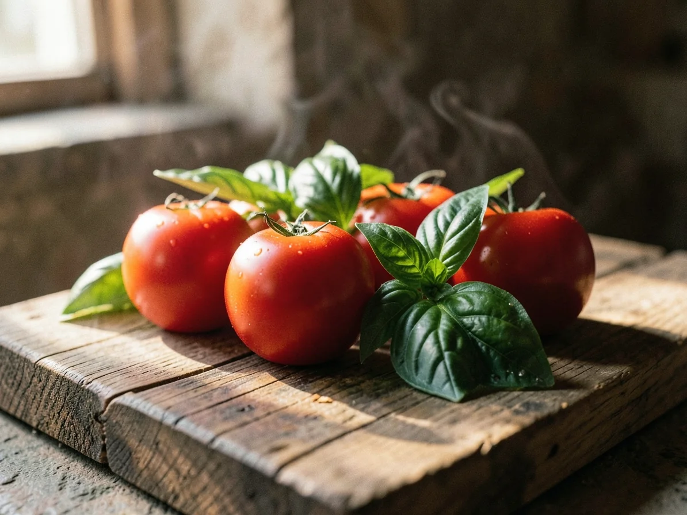
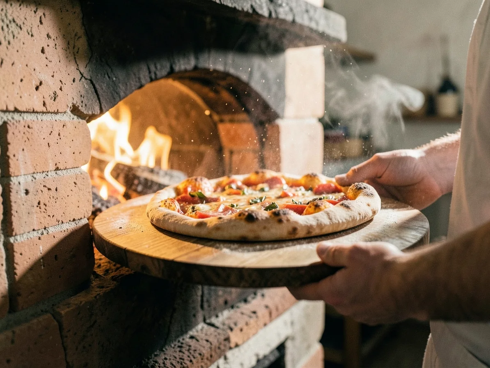
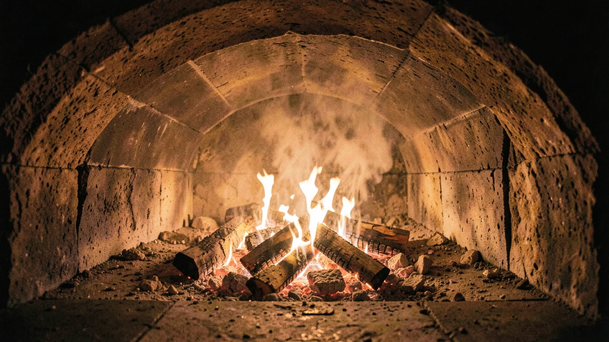

L'impasto dorme
Lievitazione lenta di 48 ore. Il glutine si rilassa, il sapore si sviluppa, la crosta diventa alveolata e leggera. Non si accelera: si aspetta.

Padova · Forno a legna
Lunga lievitazione, ingredienti di stagione, il respiro del fuoco.
Scopri il menuIl problema
Hai mangiato troppe pizze che sembravano tutte uguali. Crosta gonfia e vuota, salsa acida, mozzarella che non sa di latte. Cerchi il morso che ti riporta a qualcosa di vero: il profumo del forno, la base che si sbriciola, il sapore che non ha bisogno di condimenti per essere riconoscibile. Qui non si fa fretta. Si aspetta che l'impasto sia pronto, che il pomodoro sia di stagione, che il fuoco sia alla temperatura giusta. Il risultato non si spiega: si assaggia.
Come lavoriamo
Lievitazione lenta di 48 ore. Il glutine si rilassa, il sapore si sviluppa, la crosta diventa alveolata e leggera. Non si accelera: si aspetta.

San Marzano in estate, pomodoro datterino in inverno. Salsa cruda, olio extravergine, basilico fresco. Niente concentrato, niente zucchero nascosto.

Forno a legna, brace di faggio. Il pizzaiolo legge il calore, non il cronometro. Ogni pizza esce quando il fuoco la dice fatta: bordi bolla, cuore morbido.


Il cuore
Mattoni refrattari, brace di faggio, 450 gradi. Qui non c'è termostato: c'è un uomo che legge il fuoco da anni. Ogni pizza ha il suo tempo, e il tempo non si comprà.
Cosa ottieni
Nessun coperto, nessun minimo. Siediti, ordina, lascia che il forno faccia il suo lavoro. Se vieni in due, la pizza al taglio è la stessa qualità, al prezzo giusto.
Pizze da 8 a 14 euro
Prezzi indicativi: il menu completo è disponibile in locale e su richiesta.
Prenota o chiamaL'atmosfera
Perché Savona
di lievitazione naturale
nel forno a legna
ingredienti di stagione
concentrati, additivi, scorciatoie
Prenota un tavolo o chiama per l'asporto. Il posto migliore è quello vicino al banco, dove si sente il calore.
Domande frequenti
Sì, per gruppi oltre le 6 persone ti consigliamo di chiamare direttamente. Abbiamo spazi anche per eventi privati: chiedi disponibilità.
Sì, a Padova e nei comuni limitrofi. La pizza arriva in scatole rigide che mantengono il bordo. Tempi medi: 30-40 minuti.
Abbiamo impasto senza glutine (preparato separatamente) e opzioni vegetariane. Per allergie specifiche, avvisaci al momento dell'ordine.
Aperti dal martedì alla domenica. Pranzo e cena. Il lunedì siamo chiusi per riposo e preparazione dell'impasto della settimana.
Sì, con un contributo di tappo. In alternativa, la nostra carta dei vini è selezionata con attenzione: chiedi al banco.
C'è un parcheggio a pochi passi dal locale. In centro a Padova, la zona a traffico limitato vale: verifica prima di venire in auto.